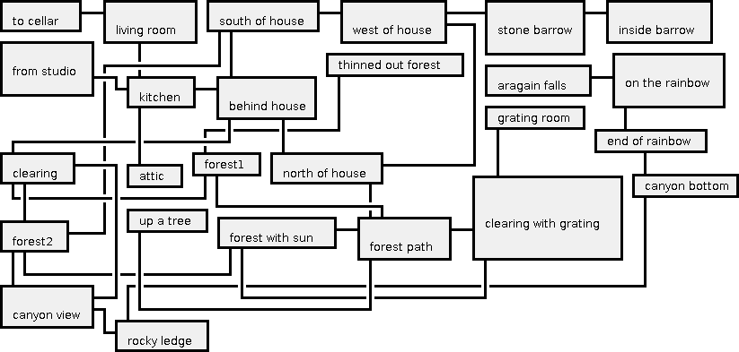

(draw-graph-image [[:to-cellar :living-room] [:living-room :kitchen] [:from-studio :kitchen] [:kitchen :attic] [:kitchen :behind-house] [:north-of-house :behind-house] [:north-of-house :west-of-house] [:west-of-house :south-of-house] [:south-of-house :behind-house] [:behind-house :clearing] [:clearing :forest1] [:forest1 :forest-path] [:forest-path :north-of-house] [:forest1 :thinned-out-forest] [:forest-path :up-a-tree] [:forest-path :clearing-with-grating] [:clearing-with-grating :grating-room] [:clearing-with-grating :forest-with-sun] [:forest-with-sun :forest2] [:forest-with-sun :forest-path] [:south-of-house :forest2] [:west-of-house :stone-barrow] [:stone-barrow :inside-barrow] [:clearing :canyon-view] [:forest2 :clearing] [:forest2 :canyon-view] [:canyon-view :rocky-ledge] [:rocky-ledge :canyon-bottom] [:canyon-bottom :end-of-rainbow] [:end-of-rainbow :on-the-rainbow] [:on-the-rainbow :aragain-falls]])
